Base items
Every weapon, armour piece, jewel, phial and tabard base.
Every item starts from a base. Higher bases need more level and attributes. Drops roll a rarity (normal, magic, rare or unique), random affixes and sockets; the base decides the damage or defence underneath.
Weapons
One-handed swords
| Name | Level | Requires | Base stats | Implicit | Sockets |
|---|---|---|---|---|---|
| 1 | 10 STR, 10 DEX | 4–9 physical · 1.4/s · 5% crit | +40 Accuracy Rating | 3 | |
| 5 | 16 STR, 16 DEX | 7–15 physical · 1.4/s · 5% crit | +40 Accuracy Rating | 3 | |
| 12 | 27 STR, 27 DEX | 10–22 physical · 1.4/s · 5% crit | +40 Accuracy Rating | 3 | |
| 20 | 40 STR, 40 DEX | 14–31 physical · 1.4/s · 5% crit | +40 Accuracy Rating | 3 | |
| 28 | 53 STR, 53 DEX | 18–40 physical · 1.4/s · 5% crit | +40 Accuracy Rating | 3 | |
| 38 | 69 STR, 69 DEX | 22–50 physical · 1.4/s · 5% crit | +40 Accuracy Rating | 3 | |
| 50 | 88 STR, 88 DEX | 28–62 physical · 1.4/s · 5% crit | +40 Accuracy Rating | 3 |
One-handed axes
| Name | Level | Requires | Base stats | Implicit | Sockets |
|---|---|---|---|---|---|
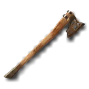 Hatchet | 1 | 10 STR, 5 DEX | 5–11 physical · 1.4/s · 5% crit | — | 3 |
| Hand Axe | 5 | 16 STR, 8 DEX | 8–18 physical · 1.4/s · 5% crit | — | 3 |
| Bearded Axe | 12 | 27 STR, 14 DEX | 12–27 physical · 1.4/s · 5% crit | — | 3 |
| War Hatchet | 20 | 40 STR, 20 DEX | 17–37 physical · 1.4/s · 5% crit | — | 3 |
| Reaver Axe | 28 | 53 STR, 26 DEX | 22–49 physical · 1.4/s · 5% crit | — | 3 |
| Ashen Cleaver | 38 | 69 STR, 34 DEX | 28–62 physical · 1.4/s · 5% crit | — | 3 |
| Lattice Cleaver | 50 | 88 STR, 44 DEX | 34–76 physical · 1.4/s · 5% crit | — | 3 |
One-handed maces
| Name | Level | Requires | Base stats | Implicit | Sockets |
|---|---|---|---|---|---|
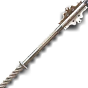 Driftwood Club | 1 | 10 STR | 6–10 physical · 1.3/s · 5% crit | 15% increased Stun Duration on enemies | 3 |
| Spiked Club | 5 | 16 STR | 10–17 physical · 1.3/s · 5% crit | 15% increased Stun Duration on enemies | 3 |
| Flanged Mace | 12 | 27 STR | 15–25 physical · 1.3/s · 5% crit | 15% increased Stun Duration on enemies | 3 |
| Morning Star | 20 | 40 STR | 20–34 physical · 1.3/s · 5% crit | 15% increased Stun Duration on enemies | 3 |
| Warden's Mace | 28 | 53 STR | 27–44 physical · 1.3/s · 5% crit | 15% increased Stun Duration on enemies | 3 |
| Ornate Mace | 38 | 69 STR | 34–56 physical · 1.3/s · 5% crit | 15% increased Stun Duration on enemies | 3 |
| Lattice Sceptre | 50 | 88 STR | 41–69 physical · 1.3/s · 5% crit | 15% increased Stun Duration on enemies | 3 |
Daggers
| Name | Level | Requires | Base stats | Implicit | Sockets |
|---|---|---|---|---|---|
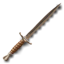 Shank | 1 | 10 DEX, 5 INT | 3–10 physical · 1.5/s · 6.5% crit | 30% increased Critical Strike Chance | 3 |
| Curved Dagger | 5 | 16 DEX, 8 INT | 5–17 physical · 1.5/s · 6.5% crit | 30% increased Critical Strike Chance | 3 |
| Stiletto | 12 | 27 DEX, 14 INT | 7–25 physical · 1.5/s · 6.5% crit | 30% increased Critical Strike Chance | 3 |
| Kris | 20 | 40 DEX, 20 INT | 10–34 physical · 1.5/s · 6.5% crit | 30% increased Critical Strike Chance | 3 |
| Ambusher's Knife | 28 | 53 DEX, 26 INT | 13–44 physical · 1.5/s · 6.5% crit | 30% increased Critical Strike Chance | 3 |
| Whisper Blade | 38 | 69 DEX, 34 INT | 17–56 physical · 1.5/s · 6.5% crit | 30% increased Critical Strike Chance | 3 |
| Lattice Fang | 50 | 88 DEX, 44 INT | 21–69 physical · 1.5/s · 6.5% crit | 30% increased Critical Strike Chance | 3 |
Wands
| Name | Level | Requires | Base stats | Implicit | Sockets |
|---|---|---|---|---|---|
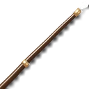 Driftwood Wand | 1 | 10 INT | 3–6 physical · 1.4/s · 7% crit | 10% increased Spell Damage | 3 |
| Apprentice Wand | 5 | 16 INT | 5–10 physical · 1.4/s · 7% crit | 10% increased Spell Damage | 3 |
| Bone Wand | 12 | 27 INT | 7–15 physical · 1.4/s · 7% crit | 10% increased Spell Damage | 3 |
| Carved Wand | 20 | 40 INT | 10–20 physical · 1.4/s · 7% crit | 10% increased Spell Damage | 3 |
| Runed Wand | 28 | 53 INT | 13–27 physical · 1.4/s · 7% crit | 10% increased Spell Damage | 3 |
| Starglass Wand | 38 | 69 INT | 17–34 physical · 1.4/s · 7% crit | 10% increased Spell Damage | 3 |
| Lattice Wand | 50 | 88 INT | 21–41 physical · 1.4/s · 7% crit | 10% increased Spell Damage | 3 |
Two-handed swords
| Name | Level | Requires | Base stats | Implicit | Sockets |
|---|---|---|---|---|---|
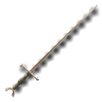 Rusty Greatsword | 1 | 10 STR, 10 DEX | 10–18 physical · 1.3/s · 5% crit | +60 Accuracy Rating | 6 |
| Bastard Sword | 5 | 16 STR, 16 DEX | 17–30 physical · 1.3/s · 5% crit | +60 Accuracy Rating | 6 |
| Highland Claymore | 12 | 27 STR, 27 DEX | 25–45 physical · 1.3/s · 5% crit | +60 Accuracy Rating | 6 |
| Executioner's Blade | 20 | 40 STR, 40 DEX | 34–61 physical · 1.3/s · 5% crit | +60 Accuracy Rating | 6 |
| Dragonbane Sword | 28 | 53 STR, 53 DEX | 44–80 physical · 1.3/s · 5% crit | +60 Accuracy Rating | 6 |
| Crownbreaker | 38 | 69 STR, 69 DEX | 56–101 physical · 1.3/s · 5% crit | +60 Accuracy Rating | 6 |
| Lattice Greatblade | 50 | 88 STR, 88 DEX | 69–124 physical · 1.3/s · 5% crit | +60 Accuracy Rating | 6 |
Two-handed axes
| Name | Level | Requires | Base stats | Implicit | Sockets |
|---|---|---|---|---|---|
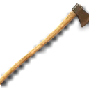 Woodsplitter | 1 | 10 STR, 5 DEX | 12–21 physical · 1.2/s · 5% crit | — | 6 |
| Double Axe | 5 | 16 STR, 8 DEX | 20–35 physical · 1.2/s · 5% crit | — | 6 |
| Headsman's Axe | 12 | 27 STR, 14 DEX | 30–52 physical · 1.2/s · 5% crit | — | 6 |
| Ravager Axe | 20 | 40 STR, 20 DEX | 41–71 physical · 1.2/s · 5% crit | — | 6 |
| Cinderforged Axe | 28 | 53 STR, 26 DEX | 53–93 physical · 1.2/s · 5% crit | — | 6 |
| Worldsplitter | 38 | 69 STR, 34 DEX | 67–118 physical · 1.2/s · 5% crit | — | 6 |
| Lattice Greataxe | 50 | 88 STR, 44 DEX | 83–144 physical · 1.2/s · 5% crit | — | 6 |
Staves
| Name | Level | Requires | Base stats | Implicit | Sockets |
|---|---|---|---|---|---|
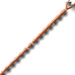 Gnarled Staff | 1 | 10 INT, 5 STR | 8–16 physical · 1.2/s · 6% crit | 18% increased Spell Damage; +5% Chance to Block Spell Damage | 6 |
| Quarterstaff | 5 | 16 INT, 8 STR | 13–27 physical · 1.2/s · 6% crit | 18% increased Spell Damage; +5% Chance to Block Spell Damage | 6 |
| Iron Staff | 12 | 27 INT, 14 STR | 20–40 physical · 1.2/s · 6% crit | 18% increased Spell Damage; +5% Chance to Block Spell Damage | 6 |
| Serpent Staff | 20 | 40 INT, 20 STR | 27–54 physical · 1.2/s · 6% crit | 18% increased Spell Damage; +5% Chance to Block Spell Damage | 6 |
| Elder Staff | 28 | 53 INT, 26 STR | 36–71 physical · 1.2/s · 6% crit | 18% increased Spell Damage; +5% Chance to Block Spell Damage | 6 |
| Stormbound Staff | 38 | 69 INT, 34 STR | 45–90 physical · 1.2/s · 6% crit | 18% increased Spell Damage; +5% Chance to Block Spell Damage | 6 |
| Lattice Stave | 50 | 88 INT, 44 STR | 55–110 physical · 1.2/s · 6% crit | 18% increased Spell Damage; +5% Chance to Block Spell Damage | 6 |
Crossbows
| Name | Level | Requires | Base stats | Implicit | Sockets |
|---|---|---|---|---|---|
| Crude Crossbow | 1 | 10 DEX | 7–15 physical · 1.4/s · 6% crit | — | 6 |
| Light Crossbow | 5 | 16 DEX | 12–25 physical · 1.4/s · 6% crit | — | 6 |
| Hunter's Crossbow | 12 | 27 DEX | 17–37 physical · 1.4/s · 6% crit | — | 6 |
| Arbalest | 20 | 40 DEX | 24–51 physical · 1.4/s · 6% crit | — | 6 |
| Siege Crossbow | 28 | 53 DEX | 31–67 physical · 1.4/s · 6% crit | — | 6 |
| Windreaver | 38 | 69 DEX | 39–84 physical · 1.4/s · 6% crit | — | 6 |
| Lattice Arbalest | 50 | 88 DEX | 48–103 physical · 1.4/s · 6% crit | — | 6 |
Hand crossbows
| Name | Level | Requires | Base stats | Implicit | Sockets |
|---|---|---|---|---|---|
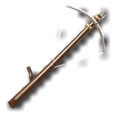 Pistol Crossbow | 1 | 10 DEX | 4–9 physical · 1.5/s · 6% crit | 10% increased Projectile Speed | 3 |
| Hand Crossbow | 5 | 16 DEX | 7–15 physical · 1.5/s · 6% crit | 10% increased Projectile Speed | 3 |
| Duelist's Repeater | 12 | 27 DEX | 10–22 physical · 1.5/s · 6% crit | 10% increased Projectile Speed | 3 |
| Assassin's Latch | 20 | 40 DEX | 14–31 physical · 1.5/s · 6% crit | 10% increased Projectile Speed | 3 |
| Viper Repeater | 28 | 53 DEX | 18–40 physical · 1.5/s · 6% crit | 10% increased Projectile Speed | 3 |
| Nightquill | 38 | 69 DEX | 22–50 physical · 1.5/s · 6% crit | 10% increased Projectile Speed | 3 |
| Lattice Repeater | 50 | 88 DEX | 28–62 physical · 1.5/s · 6% crit | 10% increased Projectile Speed | 3 |
Off-hands
Shields (armour)
| Name | Level | Requires | Base stats | Implicit | Sockets |
|---|---|---|---|---|---|
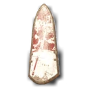 Plank Shield | 1 | 9 STR | 28 armour | +18% Chance to Block Attack Damage | 3 |
| Kite Buckler | 10 | 22 STR | 59 armour | +20% Chance to Block Attack Damage | 3 |
| Tower Shield | 22 | 38 STR | 90 armour | +22% Chance to Block Attack Damage | 3 |
| Bastion Shield | 36 | 58 STR | 120 armour | +24% Chance to Block Attack Damage | 3 |
| Lattice Bulwark | 50 | 78 STR | 151 armour | +26% Chance to Block Attack Damage | 3 |
Shields (evasion)
| Name | Level | Requires | Base stats | Implicit | Sockets |
|---|---|---|---|---|---|
| Hide Buckler | 1 | 9 DEX | 28 evasion | +18% Chance to Block Attack Damage | 3 |
| Spiked Buckler | 10 | 22 DEX | 59 evasion | +20% Chance to Block Attack Damage | 3 |
| Duelist Targe | 22 | 38 DEX | 90 evasion | +22% Chance to Block Attack Damage | 3 |
| Windward Targe | 36 | 58 DEX | 120 evasion | +24% Chance to Block Attack Damage | 3 |
| Lattice Targe | 50 | 78 DEX | 151 evasion | +26% Chance to Block Attack Damage | 3 |
Shields (ward)
| Name | Level | Requires | Base stats | Implicit | Sockets |
|---|---|---|---|---|---|
| Ward Focus Shield | 1 | 9 INT | 10 ward | +12% Chance to Block Attack Damage | 3 |
| Runed Shield | 10 | 22 INT | 21 ward | +12% Chance to Block Attack Damage | 3 |
| Sigil Shield | 22 | 38 INT | 32 ward | +12% Chance to Block Attack Damage | 3 |
| Starward Shield | 36 | 58 INT | 43 ward | +12% Chance to Block Attack Damage | 3 |
| Lattice Mirror | 50 | 78 INT | 54 ward | +12% Chance to Block Attack Damage | 3 |
Tomes
| Name | Level | Requires | Base stats | Implicit | Sockets |
|---|---|---|---|---|---|
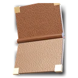 Worn Tome | 1 | 9 INT | 6 ward | 8% increased Spell Damage | 3 |
| Scholar's Tome | 10 | 22 INT | 14 ward | 12% increased Spell Damage | 3 |
| Grimoire | 22 | 38 INT | 22 ward | 16% increased Spell Damage | 3 |
| Codex of Embers | 36 | 58 INT | 30 ward | 20% increased Spell Damage | 3 |
| Lattice Codex | 50 | 78 INT | 38 ward | 24% increased Spell Damage | 3 |
Quivers
| Name | Level | Requires | Base stats | Implicit | Sockets |
|---|---|---|---|---|---|
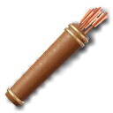 Hunter's Quiver | 1 | 9 DEX | Adds 1 to 3 Physical Damage to Attacks | — | |
| Broadhead Quiver | 10 | 20 DEX | Adds 3 to 7 Physical Damage to Attacks | — | |
| Serrated Quiver | 22 | 34 DEX | Adds 5 to 11 Physical Damage to Attacks | — | |
| Penetrating Quiver | 36 | 51 DEX | Adds 7 to 15 Physical Damage to Attacks | — | |
| Lattice Quiver | 50 | 68 DEX | Adds 9 to 19 Physical Damage to Attacks | — |
Armour
Helms (armour)
| Name | Level | Requires | Base stats | Implicit | Sockets |
|---|---|---|---|---|---|
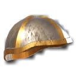 Iron Cap | 1 | 10 STR | 20 armour | — | 4 |
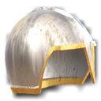 Nasal Helm | 8 | 20 STR | 43 armour | — | 4 |
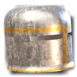 Great Helm | 17 | 34 STR | 70 armour | — | 4 |
| Barbute | 27 | 48 STR | 103 armour | — | 4 |
| Warlord's Helm | 38 | 65 STR | 140 armour | — | 4 |
| Lattice Crown | 50 | 83 STR | 182 armour | — | 4 |
Helms (evasion)
| Name | Level | Requires | Base stats | Implicit | Sockets |
|---|---|---|---|---|---|
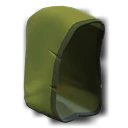 Leather Hood | 1 | 10 DEX | 20 evasion | — | 4 |
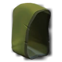 Ranger Hood | 8 | 20 DEX | 40 evasion | — | 4 |
| Hunter's Cowl | 17 | 34 DEX | 64 evasion | — | 4 |
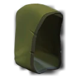 Fenrunner Hood | 27 | 48 DEX | 94 evasion | — | 4 |
| Galecowl | 38 | 65 DEX | 128 evasion | — | 4 |
| Lattice Hood | 50 | 83 DEX | 167 evasion | — | 4 |
Helms (ward)
| Name | Level | Requires | Base stats | Implicit | Sockets |
|---|---|---|---|---|---|
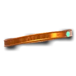 Circlet | 1 | 10 INT | 6 ward | — | 4 |
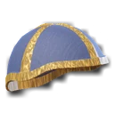 Scholar's Cap | 8 | 20 INT | 13 ward | — | 4 |
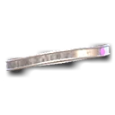 Runed Circlet | 17 | 34 INT | 21 ward | — | 4 |
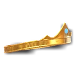 Arcane Diadem | 27 | 48 INT | 30 ward | — | 4 |
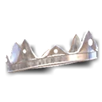 Starcrown | 38 | 65 INT | 41 ward | — | 4 |
| Lattice Diadem | 50 | 83 INT | 54 ward | — | 4 |
Helms (armour and evasion)
| Name | Level | Requires | Base stats | Implicit | Sockets |
|---|---|---|---|---|---|
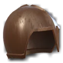 Raider Helm | 1 | 5 STR, 5 DEX | 10 armour, 10 evasion | — | 4 |
| Sallet | 8 | 10 STR, 10 DEX | 20 armour, 20 evasion | — | 4 |
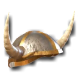 Horned Helm | 17 | 17 STR, 17 DEX | 32 armour, 32 evasion | — | 4 |
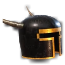 Ravager Helm | 27 | 24 STR, 24 DEX | 47 armour, 47 evasion | — | 4 |
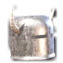 Stormhorn | 38 | 32 STR, 32 DEX | 64 armour, 64 evasion | — | 4 |
| Lattice Visage | 50 | 42 STR, 42 DEX | 83 armour, 83 evasion | — | 4 |
Helms (armour and ward)
| Name | Level | Requires | Base stats | Implicit | Sockets |
|---|---|---|---|---|---|
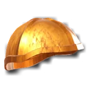 Acolyte Helm | 1 | 5 STR, 5 INT | 10 armour, 3 ward | — | 4 |
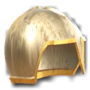 Chapel Helm | 8 | 10 STR, 10 INT | 20 armour, 6 ward | — | 4 |
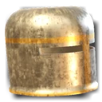 Templar Helm | 17 | 17 STR, 17 INT | 32 armour, 10 ward | — | 4 |
| Lantern Helm | 27 | 24 STR, 24 INT | 47 armour, 15 ward | — | 4 |
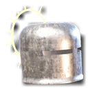 Oathbound Helm | 38 | 32 STR, 32 INT | 64 armour, 21 ward | — | 4 |
| Lattice Halo | 50 | 42 STR, 42 INT | 83 armour, 27 ward | — | 4 |
Helms (evasion and ward)
| Name | Level | Requires | Base stats | Implicit | Sockets |
|---|---|---|---|---|---|
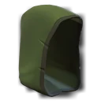 Veil Hood | 1 | 5 DEX, 5 INT | 10 evasion, 3 ward | — | 4 |
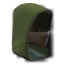 Whisper Mask | 8 | 10 DEX, 10 INT | 20 evasion, 6 ward | — | 4 |
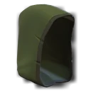 Shade Cowl | 17 | 17 DEX, 17 INT | 32 evasion, 10 ward | — | 4 |
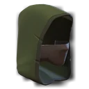 Nightmask | 27 | 24 DEX, 24 INT | 47 evasion, 15 ward | — | 4 |
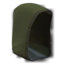 Duskhood | 38 | 32 DEX, 32 INT | 64 evasion, 21 ward | — | 4 |
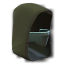 Lattice Mask | 50 | 42 DEX, 42 INT | 83 evasion, 27 ward | — | 4 |
Body armour (armour)
| Name | Level | Requires | Base stats | Implicit | Sockets |
|---|---|---|---|---|---|
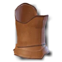 Hide Jerkin | 1 | 10 STR | 42 armour | — | 6 |
| 8 | 20 STR | 88 armour | — | 6 | |
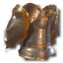 Scale Hauberk | 17 | 34 STR | 144 armour | — | 6 |
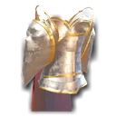 Plate Cuirass | 27 | 48 STR | 210 armour | — | 6 |
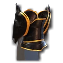 Bastion Plate | 38 | 65 STR | 286 armour | — | 6 |
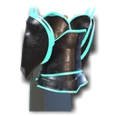 Lattice Aegis | 50 | 83 STR | 372 armour | — | 6 |
Body armour (evasion)
| Name | Level | Requires | Base stats | Implicit | Sockets |
|---|---|---|---|---|---|
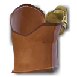 Leather Vest | 1 | 10 DEX | 42 evasion | — | 6 |
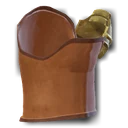 Padded Coat | 8 | 20 DEX | 85 evasion | — | 6 |
| 17 | 34 DEX | 138 evasion | — | 6 | |
| 27 | 48 DEX | 201 evasion | — | 6 | |
| 38 | 65 DEX | 274 evasion | — | 6 | |
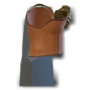 Lattice Silk | 50 | 83 DEX | 357 evasion | — | 6 |
Body armour (ward)
| Name | Level | Requires | Base stats | Implicit | Sockets |
|---|---|---|---|---|---|
| Linen Robe | 1 | 10 INT | 14 ward | — | 6 |
| Scholar's Robe | 8 | 20 INT | 27 ward | — | 6 |
| Silk Vestment | 17 | 34 INT | 44 ward | — | 6 |
| Runed Robe | 27 | 48 INT | 65 ward | — | 6 |
| Starweave Robe | 38 | 65 INT | 88 ward | — | 6 |
| Lattice Vestment | 50 | 83 INT | 115 ward | — | 6 |
Body armour (armour and evasion)
| Name | Level | Requires | Base stats | Implicit | Sockets |
|---|---|---|---|---|---|
| Studded Brigandine | 1 | 5 STR, 5 DEX | 21 armour, 21 evasion | — | 6 |
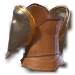 Mercenary Coat | 8 | 10 STR, 10 DEX | 42 armour, 42 evasion | — | 6 |
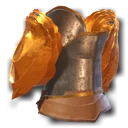 Lamellar Coat | 17 | 17 STR, 17 DEX | 69 armour, 69 evasion | — | 6 |
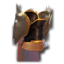 Warlord's Brigandine | 27 | 24 STR, 24 DEX | 100 armour, 100 evasion | — | 6 |
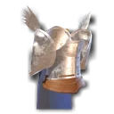 Tempest Harness | 38 | 32 STR, 32 DEX | 137 armour, 137 evasion | — | 6 |
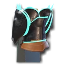 Lattice Brigandine | 50 | 42 STR, 42 DEX | 178 armour, 178 evasion | — | 6 |
Body armour (armour and ward)
| Name | Level | Requires | Base stats | Implicit | Sockets |
|---|---|---|---|---|---|
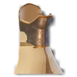 Acolyte Mail | 1 | 5 STR, 5 INT | 21 armour, 7 ward | — | 6 |
| Chapel Hauberk | 8 | 10 STR, 10 INT | 42 armour, 14 ward | — | 6 |
| Templar Plate | 17 | 17 STR, 17 INT | 69 armour, 22 ward | — | 6 |
| Sanctified Plate | 27 | 24 STR, 24 INT | 100 armour, 32 ward | — | 6 |
| Lantern Plate | 38 | 32 STR, 32 INT | 137 armour, 44 ward | — | 6 |
| Lattice Raiment | 50 | 42 STR, 42 INT | 178 armour, 57 ward | — | 6 |
Body armour (evasion and ward)
| Name | Level | Requires | Base stats | Implicit | Sockets |
|---|---|---|---|---|---|
| Shadow Wrap | 1 | 5 DEX, 5 INT | 21 evasion, 7 ward | — | 6 |
| Whisper Garb | 8 | 10 DEX, 10 INT | 42 evasion, 14 ward | — | 6 |
| Veiled Coat | 17 | 17 DEX, 17 INT | 69 evasion, 22 ward | — | 6 |
| Nightshade Garb | 27 | 24 DEX, 24 INT | 100 evasion, 32 ward | — | 6 |
| Duskweave | 38 | 32 DEX, 32 INT | 137 evasion, 44 ward | — | 6 |
| Lattice Shroud | 50 | 42 DEX, 42 INT | 178 evasion, 57 ward | — | 6 |
Gloves (armour)
| Name | Level | Requires | Base stats | Implicit | Sockets |
|---|---|---|---|---|---|
| Iron Gauntlets | 1 | 10 STR | 14 armour | — | 4 |
| Plated Gauntlets | 8 | 20 STR | 31 armour | — | 4 |
| Bronze Gauntlets | 17 | 34 STR | 52 armour | — | 4 |
| Steel Gauntlets | 27 | 48 STR | 76 armour | — | 4 |
| Titan Gauntlets | 38 | 65 STR | 103 armour | — | 4 |
| Lattice Gauntlets | 50 | 83 STR | 134 armour | — | 4 |
Gloves (evasion)
| Name | Level | Requires | Base stats | Implicit | Sockets |
|---|---|---|---|---|---|
| Leather Gloves | 1 | 10 DEX | 14 evasion | — | 4 |
| Archer's Gloves | 8 | 20 DEX | 28 evasion | — | 4 |
| Stalker Gloves | 17 | 34 DEX | 46 evasion | — | 4 |
| Eelskin Gloves | 27 | 48 DEX | 67 evasion | — | 4 |
| Windgrip Gloves | 38 | 65 DEX | 91 evasion | — | 4 |
| Lattice Grips | 50 | 83 DEX | 119 evasion | — | 4 |
Gloves (ward)
| Name | Level | Requires | Base stats | Implicit | Sockets |
|---|---|---|---|---|---|
| Linen Wraps | 1 | 10 INT | 4 ward | — | 4 |
| Silk Gloves | 8 | 20 INT | 9 ward | — | 4 |
| Runed Wraps | 17 | 34 INT | 15 ward | — | 4 |
| Conjurer Gloves | 27 | 48 INT | 22 ward | — | 4 |
| Starhand Wraps | 38 | 65 INT | 29 ward | — | 4 |
| Lattice Wraps | 50 | 83 INT | 38 ward | — | 4 |
Gloves (armour and evasion)
| Name | Level | Requires | Base stats | Implicit | Sockets |
|---|---|---|---|---|---|
| Studded Gloves | 1 | 5 STR, 5 DEX | 7 armour, 7 evasion | — | 4 |
| Brigand Gloves | 8 | 10 STR, 10 DEX | 14 armour, 14 evasion | — | 4 |
| Duelist Gloves | 17 | 17 STR, 17 DEX | 23 armour, 23 evasion | — | 4 |
| Warhand Gloves | 27 | 24 STR, 24 DEX | 33 armour, 33 evasion | — | 4 |
| Gale Gauntlets | 38 | 32 STR, 32 DEX | 46 armour, 46 evasion | — | 4 |
| Lattice Fists | 50 | 42 STR, 42 DEX | 59 armour, 59 evasion | — | 4 |
Gloves (armour and ward)
| Name | Level | Requires | Base stats | Implicit | Sockets |
|---|---|---|---|---|---|
| Acolyte Gauntlets | 1 | 5 STR, 5 INT | 7 armour, 2 ward | — | 4 |
| Chapel Gloves | 8 | 10 STR, 10 INT | 14 armour, 5 ward | — | 4 |
| Templar Gauntlets | 17 | 17 STR, 17 INT | 23 armour, 7 ward | — | 4 |
| Lantern Gauntlets | 27 | 24 STR, 24 INT | 33 armour, 11 ward | — | 4 |
| Oath Gauntlets | 38 | 32 STR, 32 INT | 46 armour, 15 ward | — | 4 |
| Lattice Handguards | 50 | 42 STR, 42 INT | 59 armour, 19 ward | — | 4 |
Gloves (evasion and ward)
| Name | Level | Requires | Base stats | Implicit | Sockets |
|---|---|---|---|---|---|
| Shade Wraps | 1 | 5 DEX, 5 INT | 7 evasion, 2 ward | — | 4 |
| Whisper Gloves | 8 | 10 DEX, 10 INT | 14 evasion, 5 ward | — | 4 |
| Veil Grips | 17 | 17 DEX, 17 INT | 23 evasion, 7 ward | — | 4 |
| Nightshade Gloves | 27 | 24 DEX, 24 INT | 33 evasion, 11 ward | — | 4 |
| Dusk Wraps | 38 | 32 DEX, 32 INT | 46 evasion, 15 ward | — | 4 |
| Lattice Touch | 50 | 42 DEX, 42 INT | 59 evasion, 19 ward | — | 4 |
Boots (armour)
| Name | Level | Requires | Base stats | Implicit | Sockets |
|---|---|---|---|---|---|
| Iron Greaves | 1 | 10 STR | 15 armour | — | 4 |
| Plated Greaves | 8 | 20 STR | 34 armour | — | 4 |
| Bronze Greaves | 17 | 34 STR | 57 armour | — | 4 |
| Steel Greaves | 27 | 48 STR | 83 armour | — | 4 |
| Titan Greaves | 38 | 65 STR | 112 armour | — | 4 |
| Lattice Greaves | 50 | 83 STR | 146 armour | — | 4 |
Boots (evasion)
| Name | Level | Requires | Base stats | Implicit | Sockets |
|---|---|---|---|---|---|
| Leather Boots | 1 | 10 DEX | 15 evasion | — | 4 |
| Ranger Boots | 8 | 20 DEX | 31 evasion | — | 4 |
| Stalker Boots | 17 | 34 DEX | 51 evasion | — | 4 |
| Eelskin Boots | 27 | 48 DEX | 74 evasion | — | 4 |
| Windstride Boots | 38 | 65 DEX | 100 evasion | — | 4 |
| Lattice Striders | 50 | 83 DEX | 131 evasion | — | 4 |
Boots (ward)
| Name | Level | Requires | Base stats | Implicit | Sockets |
|---|---|---|---|---|---|
| Linen Slippers | 1 | 10 INT | 5 ward | — | 4 |
| Silk Slippers | 8 | 20 INT | 10 ward | — | 4 |
| Runed Slippers | 17 | 34 INT | 16 ward | — | 4 |
| Conjurer Boots | 27 | 48 INT | 24 ward | — | 4 |
| Starstep Slippers | 38 | 65 INT | 32 ward | — | 4 |
| Lattice Slippers | 50 | 83 INT | 42 ward | — | 4 |
Boots (armour and evasion)
| Name | Level | Requires | Base stats | Implicit | Sockets |
|---|---|---|---|---|---|
| Studded Boots | 1 | 5 STR, 5 DEX | 8 armour, 8 evasion | — | 4 |
| Brigand Boots | 8 | 10 STR, 10 DEX | 16 armour, 16 evasion | — | 4 |
| Duelist Boots | 17 | 17 STR, 17 DEX | 25 armour, 25 evasion | — | 4 |
| Warstep Boots | 27 | 24 STR, 24 DEX | 37 armour, 37 evasion | — | 4 |
| Gale Greaves | 38 | 32 STR, 32 DEX | 50 armour, 50 evasion | — | 4 |
| Lattice Treads | 50 | 42 STR, 42 DEX | 65 armour, 65 evasion | — | 4 |
Boots (armour and ward)
| Name | Level | Requires | Base stats | Implicit | Sockets |
|---|---|---|---|---|---|
| Acolyte Greaves | 1 | 5 STR, 5 INT | 8 armour, 2 ward | — | 4 |
| Chapel Boots | 8 | 10 STR, 10 INT | 16 armour, 5 ward | — | 4 |
| Templar Greaves | 17 | 17 STR, 17 INT | 25 armour, 8 ward | — | 4 |
| Lantern Greaves | 27 | 24 STR, 24 INT | 37 armour, 12 ward | — | 4 |
| Oath Sabatons | 38 | 32 STR, 32 INT | 50 armour, 16 ward | — | 4 |
| Lattice Sabatons | 50 | 42 STR, 42 INT | 65 armour, 21 ward | — | 4 |
Boots (evasion and ward)
| Name | Level | Requires | Base stats | Implicit | Sockets |
|---|---|---|---|---|---|
| Shade Boots | 1 | 5 DEX, 5 INT | 8 evasion, 2 ward | — | 4 |
| Whisper Boots | 8 | 10 DEX, 10 INT | 16 evasion, 5 ward | — | 4 |
| Veil Boots | 17 | 17 DEX, 17 INT | 25 evasion, 8 ward | — | 4 |
| Nightshade Boots | 27 | 24 DEX, 24 INT | 37 evasion, 12 ward | — | 4 |
| Dusk Boots | 38 | 32 DEX, 32 INT | 50 evasion, 16 ward | — | 4 |
| Lattice Steps | 50 | 42 DEX, 42 INT | 65 evasion, 21 ward | — | 4 |
Jewellery and belts
Rings
| Name | Level | Requires | Base stats | Implicit | Sockets |
|---|---|---|---|---|---|
| Iron Ring | 1 | — | Adds 1 to 4 Physical Damage to Attacks | — | |
| Ruby Ring | 1 | — | +20% Fire Resistance | — | |
| Sapphire Ring | 5 | — | +20% Cold Resistance | — | |
| Topaz Ring | 10 | — | +20% Lightning Resistance | — | |
| Amethyst Ring | 16 | — | +15% Chaos Resistance | — | |
| Prismatic Ring | 24 | — | +9% all Elemental Resistances | — | |
| Moonstone Ring | 30 | — | +18 maximum Ward | — |
Amulets
| Name | Level | Requires | Base stats | Implicit | Sockets |
|---|---|---|---|---|---|
| Jade Amulet | 1 | — | +18 Dexterity | — | |
| Amber Amulet | 1 | — | +18 Strength | — | |
| Lapis Amulet | 5 | — | +18 Intelligence | — | |
| Onyx Amulet | 10 | — | +10 Strength; +10 Dexterity; +10 Intelligence | — | |
| Coral Amulet | 16 | — | +3 Life Regenerated per second | — | |
| Gold Amulet | 24 | — | 14% increased Rarity of Items found | — |
Belts
| Name | Level | Requires | Base stats | Implicit | Sockets |
|---|---|---|---|---|---|
| Rope Belt | 1 | — | +25 maximum Life | — | |
| Leather Belt | 1 | — | +35 maximum Life | — | |
| Heavy Belt | 5 | — | +25 Strength | — | |
| Chain Belt | 10 | — | +15 maximum Ward | — | |
| Studded Belt | 16 | — | 20% increased Stun Duration on enemies | — |
Phials and tabards
Life phials
| Name | Level | Requires | Base stats | Implicit | Sockets |
|---|---|---|---|---|---|
| 1 | — | 60 life over 3 s · 3 charges | — | — | |
| Restoring Phial | 10 | — | 150 life over 3 s · 3 charges | — | — |
| 22 | — | 320 life over 3 s · 3 charges | — | — | |
| 36 | — | 600 life over 3 s · 3 charges | — | — | |
| Lattice Restoring Phial | 50 | — | 950 life over 3 s · 3 charges | — | — |
Mana phials
| Name | Level | Requires | Base stats | Implicit | Sockets |
|---|---|---|---|---|---|
| Small Mana Phial | 1 | — | 40 mana over 3 s · 3 charges | — | — |
| 10 | — | 90 mana over 3 s · 3 charges | — | — | |
| Greater Mana Phial | 22 | — | 170 mana over 3 s · 3 charges | — | — |
| Grand Mana Phial | 36 | — | 280 mana over 3 s · 3 charges | — | — |
| Lattice Mana Phial | 50 | — | 400 mana over 3 s · 3 charges | — | — |
Tabards
| Name | Level | Requires | Base stats | Implicit | Sockets |
|---|---|---|---|---|---|
| Guild Tabard | 1 | — | Shows your guild's heraldry; 60 gold | — | |
| Tabard of the Lantern Compact | 1 | — | Needs Friendly with The Lantern Compact; 120 gold | — | |
| Tabard of the Thorn Covenant | 1 | — | Needs Friendly with The Thorn Covenant; 120 gold | — | |
| Tabard of the Tidewardens | 1 | — | Needs Friendly with The Tidewardens; 120 gold | — | |
| Tabard of the Emberwatch | 1 | — | Needs Friendly with The Emberwatch; 120 gold | — | |
| Champion's Tabard of the Shattered Hall | 1 | — | 1500 honour; 200 gold | — |